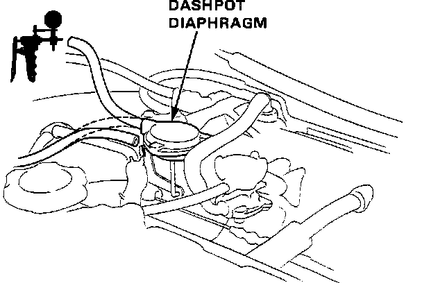

Dashpot: Description and Operation
Dashpot Testing:

DESCRIPTION
It's function is to slow the closing of the throttle valve when it is suddenly closed during gear shifting or deceleration.
PURPOSE
This helps lower Carbon Monoxide (CO) emissions caused by sudden engine deceleration. Upon sudden deceleration, vacuum is applied to the Dashpot diaphragm and the diaphragm rod prevents the throttle valve from closing too quickly. Vacuum slowly bleeds from the Dashpot diaphragm allowing the throttle valve to close slowly.
CONSTRUCTION
It consists of a Dashpot vacuum diaphragm and diaphragm rod assembly. The diaphragm rod attaches to the throttle valve actuator.